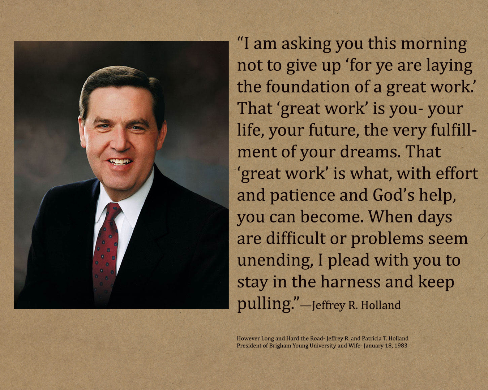
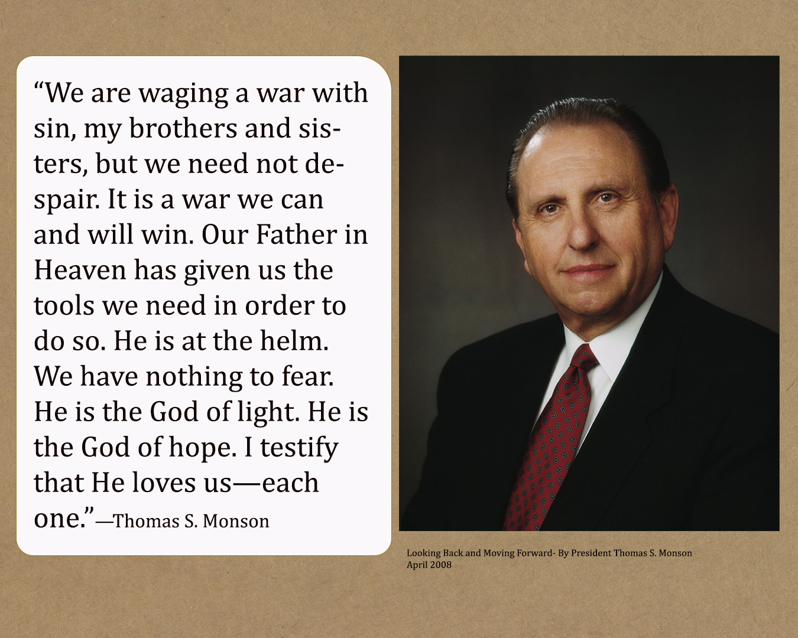
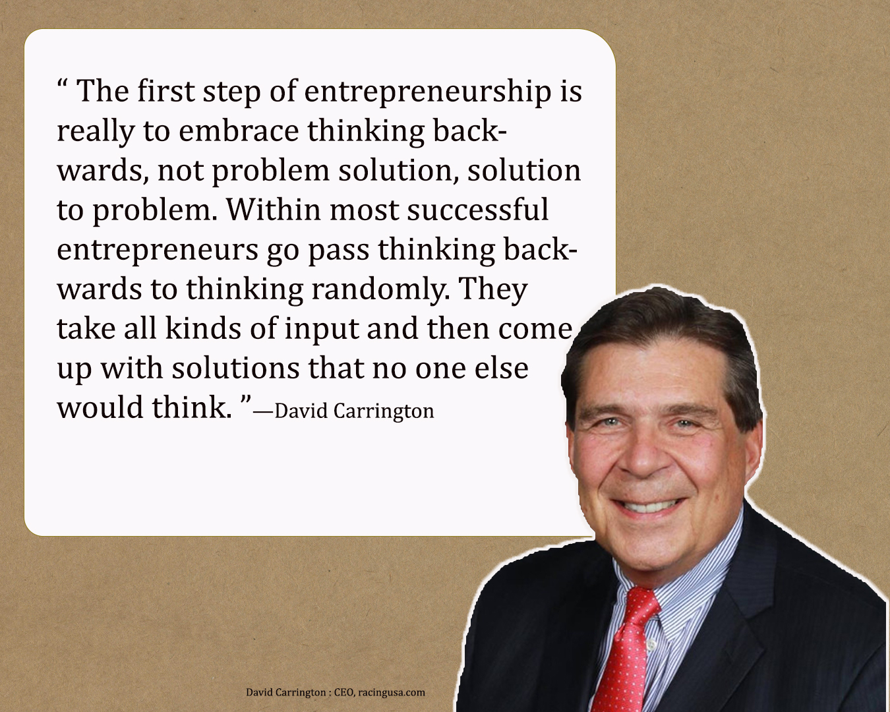
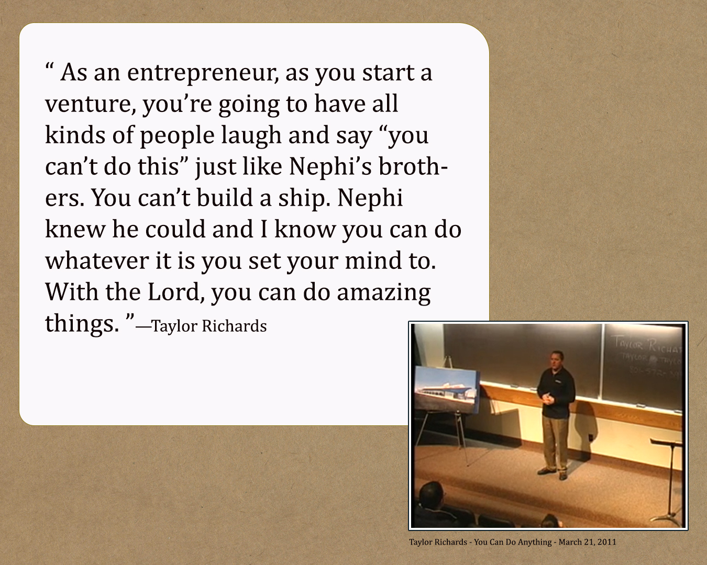
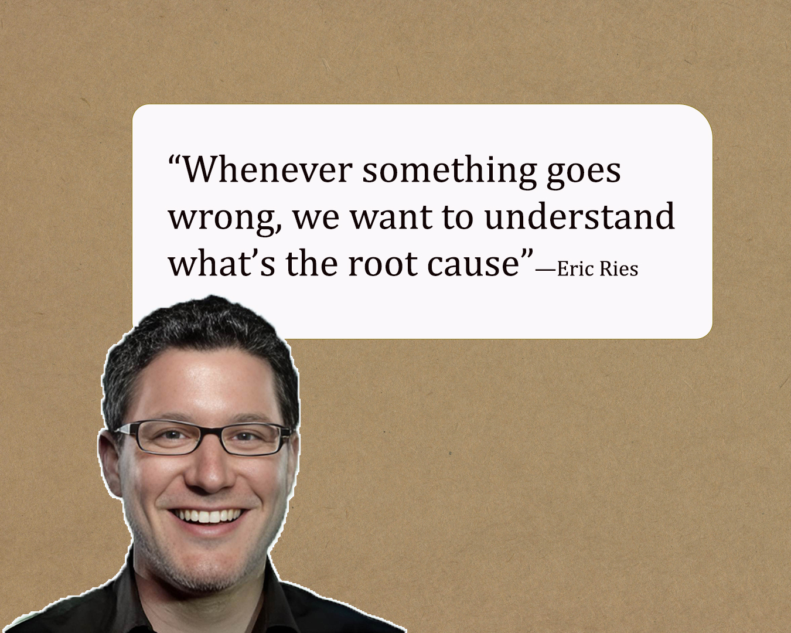
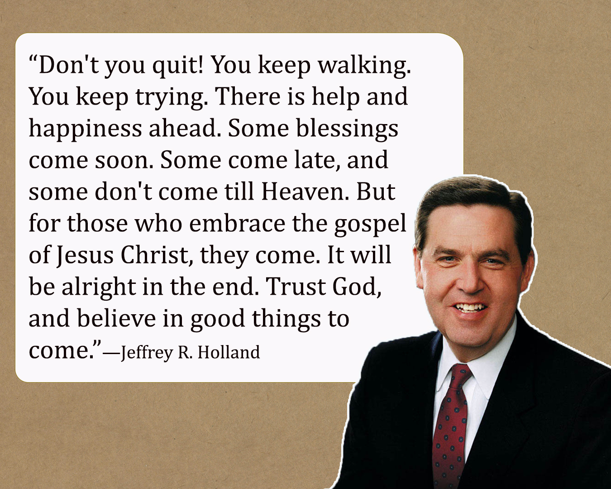

Week 08 Journal Entry
However Long and Hard the Road

Sister Holland’s words were so strong and powerful. I truly wish every young woman in the Church could hear this talk and understand her value as a daughter of God. As I reflect on my own divine worth, I think about friends who rushed into relationships that had no future because they felt alone or unloved and accepted less than they deserved. I loved the story she shared about her sister who stopped feeling discouraged about not being married. Instead, she served a mission, strengthened her relationship with the Lord, gained an education, and prepared herself. When the opportunity for marriage came, she was ready. That perspective is so empowering. It reminds me that becoming is more important than rushing and that trusting the Lord’s timing brings peace and confidence.
President Holland’s message about perseverance deeply touched my heart, especially when he taught that when we are laying the foundation of a great work, that great work is us. He said, “That ‘great work’ is you—your life, your future, the very fulfillment of your dreams.” That truth changed the way I see my daily efforts. My growth, my education, my marriage, and even my struggles are sacred work. His words about marriage also made me reflect on how I can invest more intentionally in my own relationship, remembering that strong and lasting covenants require effort, patience, and full commitment.
I was also humbled as I thought about the early Saints. They left homes and security, endured persecution and loss, and still kept moving forward because they believed in the vision God had given them. Many never lived to see the Salt Lake Temple completed, yet they kept building. Their example strengthens me. I may not face sacrifices like theirs, but I can continue shaping my own life with faith and patience. I want to keep building, trusting that every effort is part of something sacred that will bless my family now and for generations to come.
Looking Back and Moving Forward

President Thomas S. Monson gave such a beautiful talk, full of a strong and unshakable testimony. I felt his love for those who serve the Lord and his deep gratitude for the support of his wife. That touched me. I also feel a deep admiration for the men who serve God without hesitation. They give their whole hearts to the work. They are successful in their careers, yet they seek the kingdom of God above all else. That example inspires me to examine my own priorities and to ask myself what I am truly placing first in my life.
I was especially moved when President Monson spoke about the sacrifices of his ancestors and the gratitude and love he has for them. He truly honored his family through the legacy he built. Faithful sacrifices bless future generations, and their legacy strengthens us to endure our own trials with courage. I loved his reminder that we must seek Heavenly Father, come to Christ, and listen to His invitation. It is never too late to return. The Savior’s arms are open to all. When he said that we are waging a war with sin but that we need not despair because it is a war we can and will win, I felt hope. God is at the helm. He is a God of light and hope, and He loves each one of us. Mortality is a period of testing and difficulty, but it is part of the plan. In moments of darkness, we can turn to Heavenly Father in faith, and He will guide us through the storm. We have a Savior who loves us and has prepared a way for us to return to His presence. That truth gives me peace and courage to keep moving forward.
Action Hero David Carrington

Watching David Carrington talk about his journey made entrepreneurship feel deeper than just building a business. He explained that most people stop at their first idea, the easiest one, but real growth comes when you push yourself to think beyond what is obvious. The best ideas often come after you challenge yourself to go further. I loved how he described thinking backwards and even thinking randomly, allowing creativity to connect ideas that do not seem related at first. It reminded me that innovation requires patience, curiosity, and the courage to look at things differently.
What stood out to me most was his integrity. After the tragic death of Dale Earnhardt, when demand surged, he chose not to raise prices even though he could have made much more money. That decision says so much about his character. His battle with cancer also changed his perspective. It forced him to step back and realize that his businesses were running his life instead of the other way around. That moment of reevaluation brought clarity about balance and purpose. He teaches that growing a business is practical and measurable, but success ultimately depends on knowing who you are, understanding your brand, and acting with consistency and integrity.
You Can Do Anything

This video by Taylor Richards really spoke to me. I loved how he reminded me that with faith, perseverance, and the Lord’s guidance, we can accomplish things that seem impossible. Even when others doubt us or the path feels hard, we can keep moving forward and trust that God will open doors and provide opportunities. His words encouraged me to believe in my own potential, to stay determined, and to remember that with God, I truly can do anything I set my mind to.
The Five Whys

I really liked Eric Ries’ idea of the Five Whys. It showed me that when something goes wrong, it is important to keep asking why until I find the real cause. Problems are not always what they seem at first. Often there is a deeper reason, sometimes involving people and not just situations. I liked how he said that small steps to fix each part of a problem can make a big difference over time. This made me think about how I can be more patient and careful when solving challenges in my life and work.
Good Things to Come

This message of President Holland is so inspiring. I felt the Spirit so strongly as I listened to his words. Life can be difficult, and sometimes the challenges we face feel too heavy to carry, but his counsel reminds me to keep going, to keep walking, and to keep trying. Even when progress seems slow or obstacles feel overwhelming, I know that God sees every effort I make. He understands my struggles and will guide me toward help and happiness at the right time. I am learning to trust Him more fully, to have patience, and to believe that good things are coming, even when I cannot see them yet. His message fills me with hope and courage to keep moving forward, confident that every step I take with faith brings me closer to blessings that will strengthen me now and in the future.
Select: Entrepreneur Interview Part 01
As I prepared for my W08 Entrepreneur Interview assignment, I spent time thinking about the people I admire. Photographers, web designers, and entrepreneurs in different fields all inspire me. I love seeing how they dedicate themselves to their work, but also how they are active in their communities and make a real difference. It reminded me that success is more than skills or recognition. It is about growing, contributing, and leaving a positive impact. This reflection helped me think about who I want to become and how I can continue learning and improving while serving others.